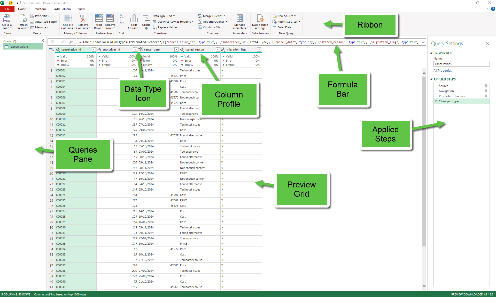

2
cleaning with confidence
eight little moves, always in the same order
Yesterday you loaded all five files into Power Query and noticed quite a few problems. Today is the day you fix them. The good news: you don't have to guess what to do. There's a fixed, named order — the Cleaning Sequence — that you'll apply to every query, the same way, every time.
Learn the eight moves and you'll never stare at a messy column again wondering where to start. The order isn't arbitrary either — each step depends on the one before it being done. Following the sequence is what saves you chasing your own tail.
By the end of today, all five files will speak the same language. Isla Hussain will wear the same name badge in every one of them. And you'll have something the assessor loves: a process you can name.
— you, sceptically, on Tuesday morning
spoiler: by Thursday you'll do it without thinking.
If you cleaned each query in a different ad-hoc order — fixing things as you noticed them — what could go wrong? Jot down two specific things before turning the page.
turn over — meet the Power Query Editor →
where everything lives
You'll spend most of today inside the Power Query Editor — a window that opens when you right-click any query and choose Edit / Transform Data. Before changing anything, get oriented.

Queries pane (left). Every query you loaded yesterday lives here. Click one to open it.
Ribbon (top). Three tabs you'll use today — Home, Transform, and Add Column. Most cleaning lives on Transform.
Column profile bar (just under each column heading). Tiny histograms telling you Valid % / Error % / Empty %. Glance at it before doing anything.
Applied Steps (right). Every action you take gets recorded as a named step. You can rename them, delete them, or step back to any earlier state. It's your safety net.
Type icon (top-left of each column). 123 = whole number · 1.2 = decimal · ABC = text · the calendar = date. We'll come back to this on Step 3.
day 2 · 9:11 a.m.
Same desk, slightly more coffee, the files are loaded and the panic has lifted. Now we make them all match.
↑ Yesterday's worries are now today's to-do list. We'll tick every one off, in order, before lunch.
before any transform
This is the "zero" step because it's something you do before any real cleaning. If your column headers are wrong (or missing), every subsequent step is fighting the wrong column. Get this right first, every time.
Sometimes Power Query auto-detects headers; sometimes it doesn't. If you open a query and see column names like Column1, Column2, Column3, the headers are sitting in the first data row. Fix it with one click:
Home → Use First Row as Headers
[ Screenshot 2 — Use First Row as Headers ]
Before: a query with Column1, Column2 headers and the real names sitting in the first row. After: real headers promoted. Show both states side by side, or the button being clicked.
Double-click the column heading and type a friendlier name. Don't be precious — short, lowercase, underscored. cancel_date is better than Cancellation Date (UK). Renaming now saves you typing the long name on every later step.
Power Query records every step by the column's current name. Rename later and you'll have to update every downstream step too. Rename once at the start, save yourself ten edits.
After you rename, point to the new name and say: “I renamed these early so every Applied Step that follows references the right column — saves ten edits later.”
before any types
You can't ask Power Query to convert "active " (with a trailing space) to a category cleanly if there's a hidden space sitting on the end. Trim and Clean are always the first text fixes. They have to come before Types — otherwise type changes might fail on whitespace.
Select the column → Transform → Format → Trim.
Real example: row 45's status column contains "active ". After Trim, that becomes "active". The two values merge into one — you can see the count of distinct values in the column profile drop from 3 to 2.
[ Screenshot 3 — Trim before/after ]
Status column profile on sw_subscribers — before: three distinct values (active, active , cancelled). Click Trim. After: two distinct values (active, cancelled). Show the Applied Steps pane updating with "Trimmed Text" step.
Same menu: Transform → Format → Clean. Removes invisible characters that sneak in from scanned PDFs, copy-paste from Word, or old systems. You probably won't see a visible change in StreamWave's data — but always click it on text columns. Two seconds, infinite future pain saved.
Two clicks. Three distinct values become two. That’s a small win — and the assessor sees it happen.
Big show-off moment. After you click Trim, hover on the column profile bar and say: “Look — distinct count just dropped from 3 to 2. That’s the trailing space gone.” The assessor sees the change happen live.
consistency over correctness
Power Query treats "Drama", "drama", and "DRAMA" as three different values. When you later group by genre, you'll get three groups instead of one — and the dashboard will look like there's three times more genre variety than there actually is. Case fixes that.
Transform → Format gives you three case options:
lowercase — everything to small lettersUPPERCASE — everything shouty[ Screenshot 4 — Transform > Format menu ]
Format dropdown opened on the Transform ribbon, showing lowercase / UPPERCASE / Capitalize Each Word / Trim / Clean / Add Prefix / Add Suffix.
Regions in sw_subscribers — pick Capitalize Each Word. Row 49's "south east" becomes "South East"; everything else is unchanged.
Genres in sw_content_library — pick Capitalize Each Word. DRAMA and drama both become Drama.
Content types in sw_content_library — same again. SERIES, series, and Series all settle on Series.
Be ready to say which case rule you chose and why. There's no single right answer — but you must pick one and apply it consistently. "I chose Capitalize Each Word for human-readable categories" is a perfect answer.
tell Power Query what each column actually is
Now the text is clean and capitalised consistently, you can safely set the data type on every column. Types matter because they control what Power Query will let you do with the column — you can't take the average of a Text column, you can't compare dates that aren't typed as dates, and so on.
Every column header has a tiny type icon on its left side. Click it to change the type.
123 — Whole Number (integers only)1.2 — Decimal NumberABC — Text[ Screenshot 5 — Type icons in header row ]
Close-up of two or three column headers showing the type icon and the dropdown that opens when you click it (with options Whole Number, Decimal, Text, Date, etc.).
2022.0 back to 2022.Heads up: changing types on dirty data sometimes creates Error values. Don't panic — Step 5 (Empty Cells & Errors) handles them. The column profile bar will tell you how many you have.
As you click the type icon for subscriber_id, say: “I’m forcing this to Text because the zero-padding is significant — I’m not letting Power Query treat it like a number.”
for anything date-y or decimal-y
If you tell Power Query "set this column to Date" without telling it which country wrote the data, it'll guess — and sometimes guess wrong. 03/05/2024 is the 3rd of May in the UK and the 5th of March in the US. Same string, completely different dates.
Right-click the column → Change Type → Using Locale… → set Data Type to Date, Locale to English (United Kingdom). Done.
[ Screenshot 6 — Change Type Using Locale dialog ]
The dialog open on the watch_date column, with Data Type set to Date and Locale dropdown showing English (United Kingdom) selected. Maybe show a sample value being correctly parsed underneath.
join_date in sw_subscribers → Change Type Using Locale, Date, English (UK).
watch_date in sw_viewing_activity → same.
cancel_date in sw_cancellations → same. (Bonus: this column also had some cells stored as proper datetime values mixed with text. Locale handles both.)
survey_date in the survey PDF → same.
Be ready to explain why you used Change Type Using Locale rather than plain Change Type. The one-sentence answer: "To force UK-format date parsing so 03/05/2024 isn't misread as 5 March."
a quick check — about 3 minutes
Four steps down, four to go. Before we look at empty cells, errors, duplicates, and the canonical key, let’s check the order is sticking.
Three true/false questions. Each one is a misconception people often have early on — if you tick a wrong box, that’s exactly the point of the check. No score, no panic.
1. You should set the column Type before you Trim it.
☐ True ☐ False
2. Localise only matters for decimal numbers, not for dates.
☐ True ☐ False
3. If you set a column to Whole Number and one cell can't convert, Power Query will throw a popup error stopping the query.
☐ True ☐ False
1. FALSE. Trim and Clean come first. Whitespace will silently break type conversion on a column with mixed valid/invalid cells.
2. FALSE. Locale matters most for dates (where the order of day/month is ambiguous) and decimals (where some locales use a comma instead of a dot).
3. FALSE. Power Query writes Error into the cell instead — silent and easy to miss. You handle it on Step 5 with Replace Errors.
the missing and the broken
Two types of bad data live in Power Query: nulls (cells that were always empty) and Errors (cells that used to have a value, but a transformation couldn't convert it). Both look different in the preview, both need handling.
Deleting empty rows or duplicates without investigating is a Delete Anomaly — the database term for losing information that should have been preserved. Assessors flag unjustified deletions every time. Before removing anything, run the Three Questions Before You Delete:
1. Why is this here? 2. What does it represent? 3. What would I lose if I removed it?
Nulls show as null in the grid; the column profile bar shows you the Empty %. Three strategies: Replace Values (change null to 0 or "unknown"), Remove Empty (Home → Remove Rows → Remove Empty), or Fill Up/Down (propagate the previous value — covered on Day 3).
Real fix today: sw_viewing_activity has nulls in watch_duration_mins. Run the Three Questions: (1) the device crashed mid-session — the duration didn't record. (2) Null here means "no recorded watch time", not "zero". (3) Removing the rows would lose the rest of the session metadata (subscriber, title, date, device) which we still need. So Replace with 0 rather than remove — totals still compute and no information is lost.
[ Screenshot 7 — Empty cells & Replace Values ]
Column profile on watch_duration_mins showing Empty %. Right-click context menu on the column with "Replace Values…" highlighted. Show the small dialog that opens: "Value to Find: null", "Replace With: 0".
Errors look like the word Error in red — appearing after type changes when a value couldn't convert. Right-click for Replace Errors (treats them like null replacement) or Remove Errors (drops the row). Apply the same Three Questions before removing: errors often point at upstream data quality issues worth fixing at source.
When you Replace Values, narrate the choice: “Nulls in watch_duration go to 0 because a missing duration means no watch — I want it counted as zero in totals, not as a gap.” The decision matters more than the click.
step 6 · part one — detect
Before you remove anything, you should see what's there. Group By is the tool for that. Think of it as a quick X-ray of any column: for each distinct value, how many rows match? Anything with a count of 2 or more is a duplicate hiding in plain sight.
Why investigate first? Because clicking Remove Duplicates without looking is a textbook Delete Anomaly — you lose information you didn't realise was there. Group By is how you avoid that. It answers the "What does it represent?" question from the Three Questions Before You Delete before a single row gets removed.
You'll meet Group By again on Day 4 — it's also the workhorse for analysis. Today we use it diagnostically.
Open the sw_cancellations query. Home → Group By. In the dialog, pick the column you suspect should be unique (here, subscriber_id). For the operation, choose Count Rows and name the new column row_count. Click OK.
[ Screenshot 8 — Group By dialog (detect duplicates) ]
Group By dialog open on sw_cancellations: Group by column set to subscriber_id, Operation set to "Count Rows", new column name row_count. Bonus: the result preview behind the dialog showing 45 grouped rows.
The result collapses 55 rows into 45 — one row per distinct subscriber. The row_count column shows mostly 1s, with ten 2s sprinkled in. Those ten are the migration duplicates.
Click the filter on row_count → uncheck "1" → you're left with exactly the 10 subscribers that have duplicate cancellation records. Now you know what you're dealing with.
Narrate the X-ray through the Three Questions: "I grouped by subscriber_id with a count. 45 distinct subscribers, 10 with two rows. Why are they here? — system migration. What do they represent? — duplicate cancellation records, all flagged migration_flag = Y, not legitimate second cancellations. What would I lose if I removed them? — nothing, the originals stay. So Remove Duplicates is justified." That's exactly what avoids the Delete Anomaly.
Once you've inspected, delete the Group By step from Applied Steps (it was a diagnostic, not a transformation). Turn the page to remove the duplicates for real.
step 6 · part two — remove
You've seen the duplicates with Group By. Now remove them — carefully, keeping the right copy.
Select the column(s) that should be unique → Home → Remove Duplicates (or right-click → Remove Duplicates).
Power Query keeps the first row it sees for each duplicate set. So before clicking Remove Duplicates, sort the table so the row you want to keep appears first.
For sw_cancellations: we want the original (migration_flag = N) row, not the migration copy. So:
migration_flag column → Sort Ascending. N comes before Y alphabetically.subscriber_id column → Remove Duplicates.[ Screenshot 9 — Remove Duplicates result ]
sw_cancellations after sorting by migration_flag and removing duplicates on subscriber_id — 55 rows → 45 rows. Applied Steps pane on the right showing "Sorted Rows" then "Removed Duplicates".
Be precise about "duplicate": if you select all columns, you only catch rows that match on every value. The migration copies have different cancellation_ids, so they wouldn't be caught. Always select only the columns that define identity — here, subscriber_id.
Before clicking Remove Duplicates, narrate the Three Questions and the sort: "I sorted by migration_flag first because Power Query keeps the first occurrence — and I want the original N row, not the migration Y copy. I've already established with Group By that these are migration artefacts, not legitimate second cancellations, so the deletion is justified and nothing is lost." Unjustified deletions are an assessor red flag; the narrated justification is the answer.
ifs and elses, without typing
You often need a new column derived from an existing one — a flag, a band, a label. Power Query gives you a click-based way to build them: the Conditional Column dialog.
Add Column → Conditional Column. Up pops a builder: for each row of conditions, pick a column, an operator (equals, greater than, contains…), a value, and the output. Below, an "Else" box catches everything that didn't match a rule.
[ Screenshot 10 — Conditional Column dialog ]
The Add Conditional Column dialog open, mid-build for is_churned — column "status" equals "cancelled" then output "1", else "0". New column name field at the top: is_churned.
On sw_subscribers, we'll build a column called is_churned that's 1 when the subscriber has cancelled and 0 when they're still active. We'll use this column all the way through Day 4 analytics.
is_churnedstatus equals "cancelled" → output 10When you build a Conditional Column, say out loud what it represents and why you needed it. "I built is_churned because I'll need a numeric flag I can sum to count churned subscribers" is gold.
Power Query reads your mind
Some transforms are hard to describe with menu options but easy to show. Columns from Examples lets you type what the output should look like for one or two rows, and Power Query infers the rule for the rest.
Add Column → Column from Examples → From Selection (the columns you'd like Power Query to consider). A panel opens on the right with an empty column. Click into the first cell and type the answer you want for that row. Power Query proposes a rule and fills the rest. Type a second example if it gets it wrong; the rule refines.
[ Screenshot 11 — Columns from Examples panel ]
The Column from Examples panel open on the right, with first_name and last_name selected. User has typed "Becky Quinn" for row 1 and "Sinead Iqbal" for row 2; Power Query has inferred the rest. Show the suggested transform text at the top of the panel.
Select first_name and last_name. Add Column → Column from Examples → From Selection. In the new blank column, type Becky Quinn for row 1. Power Query fills the rest. Rename the column full_name. Done.
In sw_viewing_activity, subscriber_id is a plain integer (12) — we need it as 5-digit zero-padded text (00012) to match the other files. Select the column, Add Column → Column from Examples. Type 00001 for row 1 and 00002 for row 2; Power Query infers the pad rule and fills the rest. Delete the integer column, rename the new one subscriber_id, set type to Text.
This is a great one to demonstrate live. After typing the second example and Power Query fills the rest, say: “It worked the rule out from two examples — no formula, no M code needed.” Assessors love this feature.
everything we've learned, in one move
The move all the other steps were leading up to. Right now, subscriber_id exists in four different formats. To merge tomorrow, all four have to match.
| Query | Current format | Fix |
|---|---|---|
| sw_subscribers (CSV) | 00012 + row 47 SW-00047 |
Replace Values: SW- → empty |
| sw_viewing_activity (XLSX) | 12 integer |
Column from Examples → padded |
| sw_cancellations (XLSX) | 12 integer |
Column from Examples → padded |
| sw_viewer_survey (PDF) | SW00012 |
Replace Values: SW → empty |
Canonical format: five digits, zero-padded, Text, no prefix. Isla arrives at 00047 in every file.
Replace Values handles the prefix-strippers. Select the column → right-click → Replace Values → Value to Find: SW-, Replace With: (leave blank). Click OK. Same again for SW.
[ Screenshot 12 — Replace Values dialog ]
The Replace Values dialog open on subscriber_id, with "SW-" in the Value to Find field and the Replace With field empty. Show subscriber_id column after replacement: SW-00047 has become 00047.
Column from Examples handles the integer→padded text conversion you learned on the previous page — type 00001, 00002 as the first two values and Power Query infers the pad-to-5 rule. Apply to both viewing_activity and cancellations.
After all four fixes, check each query's subscriber_id column — every value should now be 5-digit text, no prefix, all matching the canonical format. Isla appears as 00047 in every file.
When asked about merging, the assessor wants to hear two things: which canonical format you chose, and how you applied it consistently. "Five-digit text, zero-padded, no prefix — applied via Replace Values on the text-prefix files and Column from Examples on the integer files."
30 seconds — eyes off the page
You've just cleaned five queries top to bottom. Cover this page with your hand. Now answer each card out loud in about five seconds. No peeking.
Name the eight steps of the Cleaning Sequence in order.
Why do Trim and Clean come before Types?
What does Change Type Using Locale protect you from?
Before removing duplicates, what should you do first — and why?
What canonical format did you pick for subscriber_id, and which two Power Query tools applied it?
That's the point of the exercise — to find out what hasn't stuck. Flip back to the relevant step page for any you blanked on. Then come back. There's no prize for rushing.
You've been given a column called customer_segment with the following distinct values (after profiling): " Premium ", "premium", "Premium", "PREMIUM", "basic", "Basic", "BASIC". Write down the click-by-click steps to standardise it to two clean values: Premium and Basic.
1. Step one click(s):
2. Step two click(s):
3. Step three click(s):
1. Select the column → Transform → Format → Trim. Strips the leading/trailing spaces from " Premium ".
2. Select the column → Transform → Format → Capitalize Each Word. All the case variants settle on Premium and Basic.
3. Optional: set the column type to Text on the type icon (it already is, but worth pinning).
From memory, name the eight Cleaning Sequence steps in order (plus the climax move). Answer below.
Answer: Headers & Rename → Trim & Clean → Case → Types → Localise → Empties & Errors → Group By + Remove Duplicates → Conditional → From Examples → Canonical Key.
Error into the affected cell and carries on. The column profile bar tells you what percentage of the column is errored. Use Replace Errors (right-click the column) or Remove Errors (Home → Remove Rows) to handle them. Nothing is destroyed — your source files are untouched.subscriber_id column and check the profile bar. Every value should be five digits, zero-padded, text. The count of distinct values in subscribers should equal the number of unique subscribers expected. If anything's off, the profile bar surfaces it.Price vs Cost vs Too expensive) are harder — they're all saying the same thing but spelt three ways. Use Replace Values to consolidate, or a Conditional Column. We'll cover this on Day 3 when we look at categorical consolidation.Eight named steps. Same order every time. Boring is a feature.
10 minutes — never skip
The assessor will absolutely ask you about your cleaning process. They want to hear that you know what you did and why you did it in that order. Practise these three out loud, right now, as if they're across the table.
Name the eight steps in order. Don't list them as a flat menu — describe the shape: "I start by sorting out headers and renaming. Then I clean the text — trim and clean, then case. Then I set types, with locale for dates. Then I fix the broken data — empties and errors, then duplicates. Then I add derived columns — conditional, and from examples. Finally I standardise the joining key across every query so the merge tomorrow can't silently drop rows."
subscriber_id?The shape of the answer: state the problem, state the canonical format, state the tools, state the verification.
Try: "subscriber_id was in three different formats — 5-digit text in the CSV, plain integer in the Excel files, and SW-prefixed text in the PDF. Plus one rogue row that had a dash. I picked one canonical format — five digits, zero-padded, text, no prefix — and applied it with Replace Values to strip prefixes and Column from Examples to pad integers. Verified by checking the column profile in each query."
The shape: name the ambiguity, name the consequence.
Try: "Power Query has to guess whether a date like 03/05/2024 is 3 May or 5 March. If it guesses US format on UK data, half the dates land in the wrong month, silently. Using Locale forces UK-format parsing so there's no guessing."
For every cleaning step, name a consequence of skipping it. Not "I trimmed the column" but "I trimmed the column because a trailing space would have left two distinct 'active' values in my group-by". Cause → action → consequence. You already know this from Day 1 — same trio, works on every cleaning step.
Before you close the laptop, run this self-check. Tick each box only when it's true:
is_churned conditional column added; every subscriber_id is now 00047-format.The Merge. Tomorrow we bring it all together. The difference between appending (stacking rows) and merging (adding columns), the six join types in Power Query, why this is better than VLOOKUP/XLOOKUP, and how to verify a merge didn't silently drop rows. Priya also drops two more files on your desk — viewing activity from FY 2025-26 and FY 2026-27 — for the year-on-year view, so you'll get to append those onto today's clean data. With a canonical key and the Cleaning Sequence behind you, the merge itself is the easy part — but checking it's correct is a skill of its own.
that's Day 2 done — your five files now speak the same language.